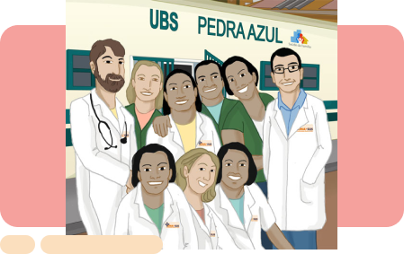
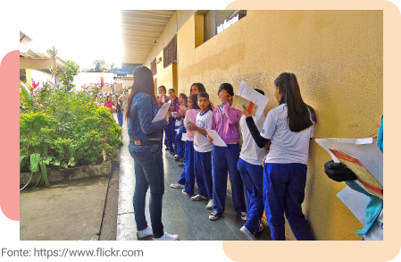
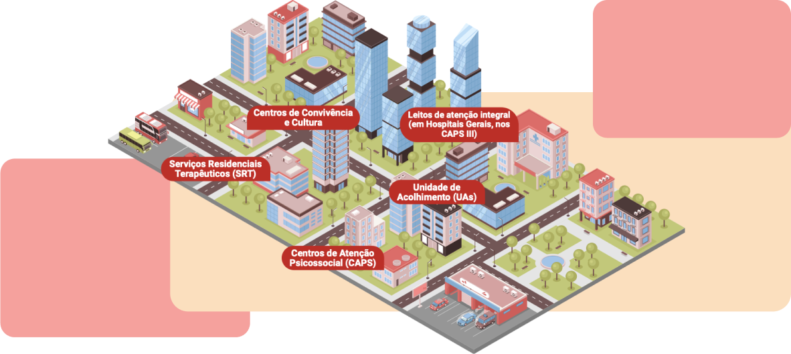
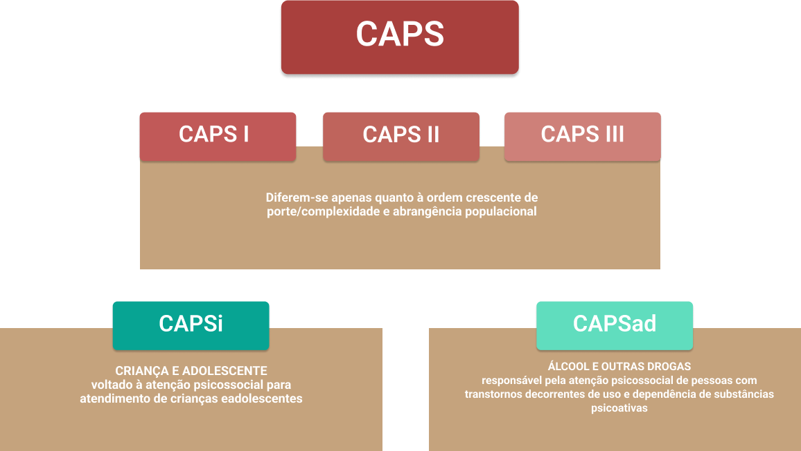

Módulo: Escola e redes sociais nas adolescências e juventudes

Sobre as autoras

Neidy Marcia de Souza Silva
Graduação em Serviço Social pela Universidade Federal do Rio de Janeiro (1985) e Mestrado em Serviço Social pela Universidade do Estado do Rio de Janeiro (2007). Assistente Social da Universidade do Estado do Rio de Janeiro e da Prefeitura da Cidade do Rio de Janeiro (aposentada), com ênfase de intervenção no campo da Saúde, Assistência Social e gestão em órgãos de controle social na área da criança e do adolescente, atuando principalmente no seguinte tema: Saúde do Adolescente. Atualmente, é Assistente Social do Núcleo de Estudos da Saúde do Adolescente, realizando atendimento com abordagem interdisciplinar e interinstitucional a adolescentes e famílias nas ações de atenção à saúde e participando em programas e projetos de garantia de direitos de adolescentes e jovens. Realiza preceptoria a alunos da faculdade de Serviço Social da UERJ e residentes do curso de Especialização Lato Sensu em Serviço Social e Saúde.

Helena Ferraz Gomes
Formada em Bacharelado e Licenciatura em Enfermagem pela Faculdade de Enfermagem da Universidade Federal de Juiz de Fora em 2009. Especialista em Saúde Coletiva, sob moldes de residência em enfermagem pela UNIRIO/UFF (2010-2012). Doutora e Mestre em Enfermagem pela Faculdade de Enfermagem da Universidade do Estado do Rio de Janeiro. Docente: Professora Adjunta da Faculdade de Enfermagem da Universidade do Estado do Rio de Janeiro – Departamento de Enfermagem Médico-Cirúrgica (DEMC) – Área Clínica. Atuação Teórico-Prática em Enfermagem Clínica com enfoque na Saúde do Adolescente. Experiência Profissional nas seguintes áreas: Enfermagem Clínica, Saúde do Adolescente e Saúde Coletiva. Realiza pesquisas nas seguintes áreas: Saúde do Trabalhador, Saúde do Adolescente e Terapia Infusional. Atua na Coordenação do Programa de Residência de Enfermagem em Saúde do Adolescente da Faculdade de Enfermagem da UERJ.

Anália da Silva Barbosa
Graduada em Serviço Social pela Universidade Federal Fluminense, Mestre em Serviço Social pelo Programa de Pós-Graduação em Serviço Social da Escola de Serviço Social da Universidade Federal do Rio de Janeiro (PPGSS/ESS/UFRJ) e Doutoranda do Programa de Políticas Públicas e Formação Humana da Universidade do Estado do Rio de Janeiro (PPFH/UERJ). Preceptora e Docente da Residência Multiprofissional em Saúde Mental da UERJ. Atualmente é Coordenadora do Centro de Atenção Psicossocial da UERJ e presta assessoria para Entidade Filantrópica do Terceiro Setor (Instituto Santa Lúcia) na área da política de assistência social, criança e adolescente e saúde mental.
Sobre o Módulo
Módulo: Redes de serviços de saúde, de proteção social e de direitos nas adolescências e juventudes
Carga horaria: 20 horas
OBJETIVOS DE APRENDIZAGEM
Apresentar a organização, em nível local e nacional, da Rede de Atenção à Saúde (SUS) e de Proteção Social (SUAS) voltadas para a adolescência e juventude, e o papel do Conselho Tutelar.
Conhecimentos
- Conhecer o SUS, princípios, organização, estrutura e rede de serviços;
- Conhecer o SUAS, princípios, organização, estrutura e rede de serviços;
- Conhecer o Conselho Tutelar, organização e atribuições;
- Conhecer a Política Nacional de Atenção Integral à Saúde de Adolescentes e Jovens e o ECA;
- Conhecer o Estatuto da Juventude;
- Conhecer redes de apoio formal e informal para o cuidado em saúde mental de Adolescentes e Jovens;
- Identificar as principais redes de atenção à saúde no SUS, com ênfase na Rede de Atenção Psicossocial (RAPS)
- Identificar situações de risco que demandam acompanhamento dos serviços do SUS, SUAS e Conselho Tutelar;
- Reconhecer a importância da rede de proteção dos direitos de Adolescentes e Jovens e o papel do Ministério Público na garantia desses direitos.
Habilidades
- Recomendar, quando necessário, os serviços do SUS;
- Recomendar, quando necessário, os serviços do SUAS;
- Recomendar, quando necessário, os serviços do Conselho Tutelar;
- Recomendar, quando necessário, redes de apoio formal e informal para o cuidado em saúde mental de Adolescentes e Jovens;
- Recomendar, quando necessário, o acesso ao Ministério Público na garantia dos direitos de Adolescentes e Jovens.

Apresentação do módulo
Olá! Neste módulo, vamos trocar conhecimentos, pensando juntos sobre as Redes de Atenção à Saúde e proteção social e o eixo de defesa de direitos nas adolescências e juventudes.
Você reconhece que ainda temos muitos desafios a serem superados nesse campo, principalmente na efetivação de políticas públicas que possam de fato assegurar direitos de adolescentes e jovens?
Acreditamos que podemos avançar coletivamente, e é por isso que você está aqui, não é?
Sabemos que o número de adolescentes e jovens na população brasileira é significativo, assim como o aumento da quantidade de famílias em situação de pobreza e extrema pobreza, agravando ainda mais as vulnerabilidades desse grupo populacional o que demonstra a necessidade de implementação de políticas públicas capazes de garantir acesso à saúde, educação, alimentação, cultura, esporte e lazer, assim como o desenvolvimento de suas potencialidades como pessoas e cidadãos de direitos.
Vamos conversar um pouco sobre história? Você acredita que conhecer o passado ajuda a explicar o que está acontecendo agora?

Vamos conversar um pouco sobre história? Você acredita que conhecer o passado ajuda a explicar o que está acontecendo agora?
“Não vou deixar
Não vou, não vou deixar você esculachar
Com a nossa história
É muito amor, é muita luta
É muito gozo, é muita dor
E muita glória
[...]
Apesar de você dizer que acabou
Que o sonho não tem mais cor
Eu grito e repito: Eu não vou”
(Não vou deixar – Caetano Veloso)
Para compreender os desafios relacionados a esse campo de intervenção, é importante entender que as políticas públicas de atenção à criança, ao adolescente e ao jovem têm uma trajetória muito recente de mudança, fruto de muitas lutas.
O Código de Menores, de 1927, estabeleceu que a pessoa é penalmente inimputável até os 17 anos, portanto somente a partir dos 18 responde por seus crimes e pode ser condenada à prisão. Essa foi a primeira lei do Brasil dedicada à proteção da infância e da adolescência. Ele foi revogado na década de 1970, mas o artigo 68, que prevê que os menores de 18 anos não podem ser processados criminalmente, resistiu às mudanças dos tempos.
Até os anos de 1970, compreendia-se o termo “menor em situação irregular” como menor de 18 anos de idade que se encontrava abandonado materialmente, vítima de maus-tratos, em perigo moral, com desvio de conduta e autor da infração penal, constituindo-se em ameaça à sociedade e à ordem vigente. Essa visão era centrada na política autoritária do Código de Menores. Você concorda que esses termos ainda são muito usados atualmente? E que ainda os ouvimos muito nas nossas relações pessoais e de trabalho? No entanto, precisamos estar atentos, pois essas nomenclaturas nos indicam qual é a direção do nosso olhar para os nossos adolescentes e jovens!
Saiba mais
Se você quiser entender um pouco mais esse período, converse com as pessoas mais idosas do seu território, ou faça leituras de livros e veja filmes que abordam essa temática. Deixamos aqui algumas sugestões:
Clique aqui para acessar o material descrito
Livro: O século perdido. Autora: Irene Rizzini.
Esse livro é um trabalho apresentado por uma autora que pretende fugir do
pequeno círculo de especialistas. Do livro participa uma vasta literatura
devidamente incorporada e criticada por Irene Rizzini, cuja segurança em
temas tão controversos como a infância e a construção nacional apenas revela
a sua já longa dedicação a uma causa que, em geral, se prefere ignorar. Há
uma análise da legislação proposta e em vigor na passagem do século XIX ao
XX, dos discursos parlamentares e de fontes diversas, tais como jornais e
obras de ficção, que, além da sua relevância substantiva, revela o esmero
metodológico na montagem e na exposição dessa pesquisa.
Saiba mais
Se você quiser entender um pouco mais esse período, converse com as pessoas mais idosas do seu território, ou faça leituras de livros e veja filmes que abordam essa temática. Deixamos aqui algumas sugestões:
Filme: O contador de história
O filme retrata a estória de um menino pobre de Belo Horizonte. Roberto
Carlos Ramos que cresce na Febem e que tem sua vida mudada ao conhecer uma
pedagoga francesa. dessa pesquisa.
Feedback positivo: O termo menor, embora não seja dito com má intenção por parte da população, tem conotação pejorativa por seu histórico de separação e inferiorização envolvendo crianças e adolescentes pobres. Raramente o termo é usado para mencionar crianças ou adolescentes de classes sociais média e alta. O próprio dicionário já apresenta a palavra menor como sinônimo de inferioridade, menos importante e hierarquicamente inferior.
Feedback orientador: A expressão "menor de idade" está relacionada ao Código de Menores de 1927, que foi criado para pensar especificamente formas de lidar com crianças e adolescentes que viviam em situação irregular ou seja, esse código foi pensado para tratar da população infantojuvenil que vivia alguma vulnerabilidade social—muitas vezes por negligência do Estado na garantia do básico para se viver— e que seriam objetos de intervenção do próprio Estado.
No princípio dos anos de 1980, com a gravidade da situação a que estavam expostas as crianças e adolescentes em nosso país, desencadeou-se um processo de luta pelos direitos das pessoas desse segmento, que ascenderam então à condição de sujeitos de direito, com a promulgação da Constituição cidadã brasileira de 1988, do Estatuto da Criança e do Adolescente e, recentemente, do Estatuto da Juventude.
O Brasil, assim, abandonou uma lei discriminatória, repressiva e segregacionista relacionada à infância e adolescência, recepcionada no Código de Menores, para adotar, em definitivo, o Estatuto da Criança e do Adolescente. O novo marco legal incorporou princípios da Convenção sobre os Direitos da Criança, adotada pela Resolução n. L44 (XLIV) da Assembleia Geral da Organização das Nações Unidas (ONU) de 20 de novembro de 1989, ratificada pelo Brasil em 24 de setembro de 1990 (ORGANIZAÇÃO DAS NAÇÕES UNIDAS, 1989; BRASIL, 1990).
Além da materialização das políticas públicas específicas no campo da saúde, assistência social, educação, entre outras, vai se consolidando, principalmente após a Constituição Federal de 1988, um novo olhar para adolescentes e jovens, que os reconhece como sujeitos com necessidades específicas, que devem ser garantidas pelo Estado, sociedade civil e pela família. Foi com esse entendimento que a história relatada, “Caio: da camisa do pai aos olhos de jabuticaba”, foi se desenrolando em suas diferentes situações de vulnerabilidades e riscos.
Para alcançar os objetivos de reduzir riscos e fortalecer os fatores protetores de adolescentes e jovens, é preciso que, cada vez mais, as ações da rede de atenção e proteção estejam articuladas, em uma concepção de abordagem integral, levando em consideração o contexto no qual o jovem está inserido. Mais uma vez nos remetemos à ideia de adolescências e juventudes plurais.
Cada pessoa é diferente e vem de culturas, famílias e territórios, por vezes, diferentes daqueles de quem os acolhe.
Assim, além de pensarmos nessa pluralidade e diversidade, temos que lembrar que as ações das redes de serviço devem contemplar uma atenção integral. Já pensou no significado de atenção
Partindo dessas reflexões, vamos avançar um pouco mais na nossa troca, abordando e conhecendo a Rede de Atenção à Saúde e de Proteção Social? Quais são suas principais diretrizes? Como elas se organizam e se entrelaçam em um movimento de rede? Convidamos você a refletir conosco!
Feedback positivo: O termo menor, embora não seja dito com má intenção por parte da população, tem conotação pejorativa por seu histórico de separação e inferiorização envolvendo crianças e adolescentes pobres. Raramente o termo é usado para mencionar crianças ou adolescentes de classes sociais média e alta. O próprio dicionário já apresenta a palavra menor como sinônimo de inferioridade, menos importante e hierarquicamente inferior.
Feedback orientador: A expressão "menor de idade" está relacionada ao Código de Menores de 1927, que foi criado para pensar especificamente formas de lidar com crianças e adolescentes que viviam em situação irregular ou seja, esse código foi pensado para tratar da população infantojuvenil que vivia alguma vulnerabilidade social—muitas vezes por negligência do Estado na garantia do básico para se viver— e que seriam objetos de intervenção do próprio Estado.
Diante dos desafios da promoção, proteção e recuperação da saúde dos adolescentes e jovens e da magnitude das questões e das situações de risco que envolvem esse segmento, o Ministério da Saúde criou o Programa de Saúde do Adolescente (PROSAD) (BRASIL, 1996), cujas Bases Programáticas foram publicadas em 1989.
O Ministério lançou o documento Marco Legal da Saúde de Adolescentes. Apenas em 2010 os jovens passaram a ser também incluídos nessa política consolidada nas Diretrizes Nacionais para a Atenção Integral à Saúde de Adolescentes e Jovens na Promoção, Proteção e Reparação da Saúde. Esse documento aprofunda o enfoque da perspectiva de atenção integral da saúde do adolescente e jovem, visando superar uma visão fragmentada e entender os vários aspectos que fazem parte das suas necessidades de saúde. Além de propor o diálogo interdisciplinar e intersetorial, ele propõe a interação com os adolescentes e jovens, respeitando sua cultura e conhecimentos adquiridos. Esse movimento aumenta a possibilidade de identificação das necessidades dos adolescentes e de suas famílias e de absorção dos conhecimentos pelos usuários, o que favorece o fortalecimento do acesso aos direitos e uma maior organização da sociedade.
Agora que já nos apropriamos da existência do programa voltado para atenção à saúde do adolescente e jovem, é preciso entender que as discussões e formas de atuação no campo da atenção integral à saúde dos adolescentes e jovens é tarefa importante para as equipes de saúde e para a população local, haja vista que lidar com situações complexas exige das equipes multidisciplinares uma abordagem integral dos problemas detectados. Sabemos, ainda, que modelos tradicionais de atendimento à saúde, trabalhados de forma isolada e independente, não respondem às necessidades dessa população (PINHEIRO, 2001).

Vamos caminhar mais um pouco na compreensão e organização dos serviços de atenção à saúde?
Vamos caminhar mais um pouco na compreensão e organização dos serviços de atenção à saúde?
Para responder às diferentes demandas dos indivíduos que procuram os cuidados em saúde, é preciso destacar o papel da Atenção Básica ou Atenção Primária em Saúde na reorganização do sistema. Ela foi desenvolvida com base na descentralização e na capilaridade, para ser oferecida no local mais próximo da vida das pessoas (BRASIL, 2012; BRASIL, 2017a).
Além disso, a Atenção Básica é constituída por equipe multidisciplinar que atua no desenvolvimento de programas e ações que levam em consideração a diversidade das necessidades de saúde dos usuários, com vistas a atender os princípios da acessibilidade, coordenação do cuidado, vínculo, continuidade e integralidade. Essas equipes atuam nas Unidades Básicas de Saúde (UBS) ou Estratégia Saúde da Família (ESF) (ANDERSON, 2019).
Partindo desses questionamentos, é importante destacar que as UBS e a ESF são unidades instaladas perto de onde as pessoas vivem, trabalham e estudam que possibilitam a resolução de grande parte das suas necessidades de saúde e, caso seja necessário, encaminham os usuários para outros níveis de atenção. No caso relatado neste módulo, “Caio: da camisa do pai aos olhos de jabuticaba”, a ESF foi a porta de entrada e o início de uma grande jornada na garantia dos direitos e da dignidade. Essa rede de cuidados garantiu a Caio e à sua família o atendimento pautado pelos princípios da universalidade, da integralidade, do vínculo, da continuidade do cuidado, da equidade e da humanização.
A ESF, por meio de seus agentes de cuidado, Agente Comunitário de Saúde (ACS), médico, enfermeiro, assistente social e dos profissionais do Núcleo Ampliado de Saúde da Família e Atenção Primária (NASF), possibilitou a Caio a escuta ativa, a criação de vínculo e a articulação com a rede de serviços de saúde, de proteção social e demais políticas públicas que contribuem para o acesso a direitos
A Visita Domiciliar constitui instrumento técnico-operativo de acompanhamento das famílias, tendo como objetivo compreender os aspectos que envolvem o cotidiano e a realidade socioterritorial daquela família. A Visita Domiciliar também visa aprofundar o conhecimento sobre o modo de viver e as condições de vida das famílias, de modo singular, com postura ético-política voltada ao atendimento das necessidades, respeitando a liberdade e a autonomia (CLOSS; SCHERER, 2017).
Nesse sentido, é importante lembrar o papel dos profissionais que atuam nessas unidades, que é o de cuidar da saúde da população adscrita, no âmbito da unidade de saúde e, quando necessário, no domicílio e demais espaços comunitários, como escolas, associaç ões, entre outros.
Lembra-se da equipe do Consultório na Rua, que foi responsável pela acolhida e escuta qualificada de Caio e que, por meio de uma articulação com a rede, encaminhou o jovem a uma Central de Acolhimento para Crianças e Adolescentes?
A situação de Caio e de seu amigo nos leva a pensar naquilo que Bruna Alt afirma no estudo que fez:
As pessoas em situação de rua enfrentam violência psicológica devido às ações preconceituosas e a discriminação que sofrem no cotidiano. Além disso, sofrem violência física nas ruas e nos espaços institucionalizados.
Essa iniciativa do canal Pode Falar é uma potente estratégia de ação voltada aos adolescentes e jovens, (incluir uma vírgula) que busca a integração com as atividades rotineiramente previstas e desenvolvidas pelas equipes de atenção básica.
Somam-se às equipes da Atenção Básica os NASF-AP, compostos por equipe multiprofissional e interdisciplinar com profissionais de saúde de diferentes categorias e especialidades que atuam de forma integrada buscando garantir a ampliação das ações e a resolutividade. Lembra-se de que Bia e Carol, irmãs de Caio, por intermédio da equipe pedagógica da escola em conjunto com a equipe da ESF, foram avaliadas pela psicóloga matriciadora do NASF e que Bia passou a ser acompanhada no ambulatório de saúde mental do território?
Saiba mais
Vamos compreender melhor o que é matriciamento? Leia o Guia prático de matriciamento em saúde mental acessando o link:
Clique aqui para acessar o material descrito
Nesse guia, podemos compreender que o matriciamento ou apoio matricial é um novo modo de produzir saúde em que duas ou mais equipes, num processo de construção compartilhada, criam uma proposta de intervenção pedagógico-terapêutica. No processo de integração da saúde mental à atenção primária na realidade brasileira, esse novo modelo tem sido o norteador das experiências implementadas em diversos municípios, ao longo dos últimos anos.
Nesse caso, podemos observar o papel da ESF e do NASF e a articulação em rede, fundamentais para a garantia da resolutividade e do cuidado, que deve ser pautado pelas necessidades de saúde do usuário.
Portanto, as UBS e a ESF estão próximas ao território e têm por função organizar a Rede de Atenção à Saúde por meio da interlocução com os serviços de saúde, da proteção social e demais políticas públicas que contribuem para o acesso a direitos, ressignificando o modo de ser e de viver de muitos adolescentes, jovens e seus familiares.
Ah, lembra-se de que falamos do Programa Saúde na Escola (PSE)? Pois bem, esse Programa foi instituído pelo Decreto nº 6.286, de 5 de dezembro de 2007 (BRASIL, 2007). Surgiu como política intersetorial e interministerial, em uma perspectiva de atenção integral à saúde de crianças, adolescentes e jovens do ensino básico, no âmbito das escolas e UBS.
Contudo, pensar em rede é um desafio. Lembra-se da Bianca, assistente social? Ela, por meio de um grupo de WhatsApp que tinha profissionais que compunham os serviços da rede local (CRAS, CREAS, Conselho Tutelar, CAPSi, CAPSad, Escola Municipal, Clínica da Família, ONGs), articulou uma reunião com os equipamentos públicos locais e com a rede socioassistencial do território para pensar estratégias de cuidado para Caio. Bianca juntou todas as lembranças e aprendizados e transformou-os em propulsão.
Vamos, a partir de agora, pensar sobre a importância da política de assistência social e as suas mudanças nos dias atuais?
Vamos, a partir de agora, pensar sobre a importância da política de assistência social e as suas mudanças nos dias atuais?
É ele o contador da história que construímos.
O tempo que cura saudades,
que em mais-valia capitalista
explora cada trabalhador/a na sua labuta.
O tempo é também contradição,
que prepara a luta, tece a resistência...
E que o tempo que nós vivemos
traga na sua outra face
a sonoridade da liberdade, um verde
mais vicejante de esperança.
E que em todos os seus versos
tenha a emergência da luta e da resistência,
no tempo em que lutar
é tão necessário quanto viver, respirar...”
(Tempo de luta e Resistência – Andrea Lima)
Vamos conversar um pouco mais sobre os percursos históricos para entender o processo de fortalecimento desse campo. Mais uma vez, esse caminho não foi fácil. Bem, aqui estamos falando de uma rede de dispositivos, no campo da Assistência Social, que assegura direitos, apesar de historicamente já demarcar na prática a necessidade de fortalecimento de uma política voltada para a lógica de direitos sociais, esse movimento chega bem mais tarde ao Brasil, o que o diferencia do campo da saúde que foi pioneira nessa luta.
Partindo desses questionamentos, é importante destacar que as UBS e a ESF são unidades instaladas perto de onde as pessoas vivem, trabalham e estudam que possibilitam a resolução de grande parte das nossas necessidades de saúde e, caso seja necessário, encaminham os usuários para outros níveis de atenção. No caso relatado neste módulo, “Caio: da camisa do pai aos olhos de jabuticaba”, a ESF foi a porta de entrada e o início de uma grande jornada na garantia dos direitos e da dignidade. Essa rede de cuidados garantiu a Caio e à sua família o atendimento pautado pelos princípios da universalidade, da integralidade, do vínculo, da continuidade do cuidado, da equidade e da humanização.
Na área da Assistência Social esse movimento é impulsionado pela Constituição Federal de 1988, em que o termo Seguridade Social é utilizado pela primeira vez. A Seguridade Social é composta pelo tripé: Saúde, como direito de todos; Previdência, de caráter contributivo; e Assistência Social, para os que dela necessitarem (BRASIL, 1988). Assim, a perspectiva da assistência social na lógica dos direitos marca seu início[1] em 1993 com a aprovação da Lei Orgânica da Assistência Social, Lei nº 8.742 (LOAS) (BRASIL, 1993).
A LOAS preconiza que a gestão da política de Assistência Social e a organização das ações devem ser articuladas em um sistema descentralizado e participativo, organizado nos três níveis de gestão governamental. A política de assistência social é um direito do cidadão e um dever do Estado no provimento aos mínimos sociais.
Em 2004, o Ministério do Desenvolvimento Social e Combate à Fome (MDS) consolidou a assistência social como Política Nacional de Assistência Social (PNAS), com o compromisso de redesenhar, coletivamente, a política na perspectiva de implementação de um Sistema com diretrizes e serviços envolvidos: o Sistema Único de Assistência Social (SUAS), que foi promulgado em 2005 (BRASIL, 2005b). É a partir da implementação do SUAS que há um forte movimento de rompimento com a lógica de uma ação vinculada à concepção assistencialista. Os segmentos mais pobres, com mais desempregados e subempregados sem vínculo formal não tinham direito aos benefícios e serviços sociais públicos. Para eles eram destinados, pelo Estado ou sociedade civil, os programas assistenciais a título compensatório ou de benesse.
Você sabe a diferença entre assistencialismo e a política de Assistência Social?
- Ligado à filantropia;
- Concepção culpabilizadora dos indivíduos;
- Eventual, incerta, fragmentada;
- Com o fim em si mesma;
- Sem capacidade para provocar mudanças na vida dos cidadãos.
- CRAS – Centro de Referência de Assistência Social;
- CREAS – Centro de Referência Especializado de Assistência Social;
- Centro Pop – Centros de Referência Especializados para População em Situação de Rua;
- Centro Dia – Centro Dia de Referência para Pessoa com Deficiência e suas Famílias;
- Unidades de Acolhimento – Casa Lar, Albergue, Abrigo Institucional, República, Residência Inclusiva, Casa de Passagem.
Feedback positivo: Faz-se muito importante compreender a politica de assistência social como uma politica de Estado e organizada dentro do Sistema Unico da Assistência Social.
Feedback orientador: Para facilitar o entendimento iremos listar as diferenças entre o assistencialismo e a política de assistência social garantida pela Constituição Federal de 88.
Será que já superamos essa lógica? O que você percebe na sua região? De fato, o que o SUAS apresenta como diferente no seu desenho de política pública? Que tal agora conhecermos os equipamentos e benefícios criados por essa política, assim como vimos na história de Caio?
Vamos lá! O SUAS é um modelo de gestão descentralizado, com uma nova lógica de organização das ações socioassistenciais, que considera as características do território e tem foco prioritário na atenção às famílias, que são o alvo das ações de proteção social. O SUAS reforça a importância de um conjunto protetivo da seguridade social como um direito de cidadania, articulada à lógica da universalidade.
Com base nesse desenho, o SUAS consolida uma nova forma de gestão pública, tendo como pressupostos principais a territorialização, a descentralização e a intersetorialidade. É importante destacar que o SUAS permitiu a ampliação dos serviços socioassistenciais, respeitando as diferenças locais, desenvolvidos de forma descentralizada, com enfoque na matricialidade familiar com ações intersetoriais conjuntas e articuladas.
Considerando essa lógica, observa-se que, no atendimento às necessidades sociais de Caio, levaram-se em consideração a família, a rede de atenção à saúde e a rede constituída pelos equipamentos sociais e comunitários do território, tendo por base o desafio de enfrentar as questões sociais que afetam a vida do cidadão no local onde vive e convive com outros cidadãos.
Você consegue perceber que essa forma de gestão tem o mesmo desenho do Programa Estratégia Saúde da Família, que desmonta uma marca a ser superada? Concorda que o contexto em que se encontram e se movimentam setores e organizações faz diferença no desenvolvimento dos
Feedback positivo: Sabemos que por décadas as políticas públicas foram organizadas na lógica da centralização com base num único comando. A proposta do SUAS tem por eixos ordenadores: o território, a família, a descentralização administrativa e a intersetorialidade. Tem como foco principal a atenção integral à família e indivíduos que a formam, buscando assegurar o direito à convivência familiar e comunitária.
Feedback orientador: O SUAS por meio da territorialização, reconhece a presença dos múltiplos fatores sociais e econômicos que levam o indivíduo e a família a situações de vulnerabilidade ou risco social. Com a intersetorialidade busca a integração entre os diferentes serviços de saúde, proteção social e justiça. E na perspectiva da descentralização, cada esfera de governo tem suas ações político-administrativas, respeitando-se as diferenças e características socioterritoriais e locais. Além disso, é importante enfatizar que todos somos participantes: gestores, técnicos, trabalhadores em geral, usuários, conjunto social, na implementação e consolidação do SUAS.
Nessa perspectiva, a política de proteção social toma uma nova forma, passando a compor um conjunto de ações que deve assegurar a preservação, a segurança e a dignidade de todos os cidadãos. Tem como fundamento diretrizes embasadas na perspectiva do acolhimento, do fortalecimento de vínculos, do atendimento integral ao cidadão e da prática intersetorial.
O SUAS buscou estruturar sua rede de proteção social em níveis de complexidade, organizando os equipamentos públicos em proteção social básica e especial, materializados como Centros de Referência da Assistência Social (CRAS) e como Centro de Referência Especializado da Assistência Social (CREAS), espaços de prestação de serviços e de articulação da rede de atenção socioassistencial que têm como eixos estruturantes as necessidades sociais das famílias em seus territórios.[1] Sugerimos que esse trecho fique em destaque seja em um quadro ou algo que sinalize a sua importância.
Você já ouviu falar nesses equipamentos no seu território?
Você já ouviu falar nesses equipamentos no seu território?
Então vamos situar você mais um pouco nesse rol de siglas! A Proteção Social Básica trabalha na prevenção de situações de vulnerabilidade e risco, bem como no fortalecimento de vínculos familiares e comunitários. É por meio do Centro de Referência da Assistência Social (CRAS) que a proteção social se territorializa e se aproxima da população, reconhecendo a existência das desigualdades sociais (BRASIL, 2009a).
Saiba mais
Despertou seu interesse em conhecer mais sobre o Centro de Referência da Assistência Social (CRAS)? Acesse o link:
Clique aqui para acessar o material descrito
Essa obra apresenta o funcionamento do CRAS por todo o país, representando mais um fio da extensa rede de proteção e promoção social que está sendo construída no Brasil
Mais uma vez, lembra-se da Assistente Social da ESF que lembrou do grupo do WhatsApp? Pois é, esse espaço é importante para organizar esse trabalho de formação de rede local!
Contudo, é fundamental entender que essa articulação na formação de rede é um ato em movimento impulsionada pelos diferentes atores institucionais. Essa rede se constitui em cada território mediante a integração de serviços, reconhecendo a interdependência dos atores e organizações, em face da constatação de que nenhuma delas dispõe da totalidade de recursos, atribuições e competências necessários para a resolutividade dos problemas e demandas de uma população em seus diversos ciclos de vida. (SILVA JUNIOR et al, 2006)
A rede local caracteriza-se como um exercício de prática intersetorial, um arranjo institucional, que exige articulação, conexão, vínculos, ações complementares, relações horizontais entre parceiros, uma vez que o sujeito é um só com suas diferentes dimensões de vulnerabilidade e risco.
É importante sabermos também sobre os Serviços de Proteção Social Especial, que tem estreita relação com o Sistema de Garantia de Direitos, cujo foco está nas famílias e indivíduos que estão em situação de risco pessoal e social.
A Proteção Social Especial prevê dois níveis de complexidade:
Serviços de média complexidade
São organizados nos Centros de Referência Especializados de Assistência Social (CREAS), unidades que oferecem atendimento às famílias e indivíduos que tiveram seus direitos violados, mas cujos vínculos familiares e comunitários não foram rompidos.
Serviços de alta complexidade
(Serviço de Acolhimento Institucional, República de jovens, Família Acolhedora, entre outros). Garantem proteção integral tanto para famílias e indivíduos (crianças, adolescentes, jovens e adultos) que estão sem referência e cujos vínculos familiares e afetivos foram rompidos como para indivíduos em situação de ameaça, que precisam ser retirados do convívio familiar e/ou comunitário.
Você compreendeu a relação entre esses diferentes serviços na história de vida do jovem Caio e de sua família? Muitas redes se entrelaçaram, né? Assim, podemos pensar que, apesar de haver muitas lacunas na operacionalização desses serviços, eles existem na estrutura da política da Assistência Social e precisam exercer o seu papel na proteção social da população.
Você já pensou nos múltiplos significados que a palavra rede tem? Rede de pesca, rede de cabelo, rede de futebol, redes de cuidado, e, mais recentemente, um grupo de redes ganhou destaque: as redes sociais virtuais. Bianca buscou parcerias em um grupo de WhatsApp. Você já fez uso ou vislumbra outras utilidades das redes sociais para acolher adolescentes e jovens em situação de vulnerabilidade psicossocial?
Por falar em redes, a família é o primeiro espaço de socialização de uma criança e, por isso, tem um papel importante de representação do mundo exterior.
Vamos refletir um pouco sobre família, esse grupo social tão importante em nossa sociedade?
Ao pensar em vínculos familiares e afetivos rompidos, não podemos deixar de destacar a violência intrafamiliar, problema social complexo que afeta toda a sociedade, atingindo, de forma contínua, mulheres, crianças, adolescentes e jovens (BRASIL, 2009b).
A violência intrafamiliar é a ação ou a omissão de algum membro da família que causa danos ao outro indivíduo. Esse tipo de violência contra crianças, adolescentes e jovens viola os direitos humanos, prejudicando o bem-estar, a liberdade e a integridade física e psicológica da pessoa que sofre a violência (BRASIL, 2009b; RIBEIRO, 2020).
O ECA, em seu artigo 5º, estabelece que nenhuma criança ou adolescente será objeto de qualquer forma de negligência, discriminação, exploração, violência, crueldade e opressão, punido na forma da lei qualquer atentado, por ação ou omissão, aos seus direitos fundamentais (BRASIL, 1990). Além disso, ampara a denúncia e estabelece os princípios para o seu enfrentamento, assim como para a atenção psicossocial da família.
A violência precisa ser visibilizada, discutida e combatida. Cabe a toda a sociedade civil, a agentes públicos, a profissionais de saúde e à família assegurar a proteção de crianças, adolescentes e jovens. Dentro do ordenamento jurídico, ressalta-se a importância do Conselho Tutelar, do Ministério Público e das Varas da Infância e da Juventude, órgãos responsáveis pela defesa dos direitos de criança e adolescente e assegurados pelo Sistema de Garantia do Direito da Criança e do Adolescente (SGDCA) (Resolução 113 do CONANDA) (CONSELHO NACIONAL DOS DIREITOS DA CRIANÇA E DO ADOLESCENTE, 2006).
Esses órgãos são fundamentais no eixo de defesa diante da violação de direitos de adolescentes e jovens. O objetivo deles é defender e garantir direitos, podendo, com a aplicação da lei, determinar ações de atendimento e de responsabilização do Estado, da sociedade e da família. Assim, é importante termos a compreensão de que, sempre que possível, devemos buscar o diálogo com esses órgãos de defesa. Eles devem estar próximos e acessíveis à população. Destacamos aqui a importância do Conselho Tutelar e de romper com a visão tão impregnada na população de que esse órgão desempenha uma função “policialesca”, “repressora” e de poder máximo nas intervenções diante da violação de direitos de crianças e adolescentes. Como vimos na história de Caio, não foi atribuído ao Conselho Tutelar o poder de decisão sobre o afastamento do adolescente do convívio familiar e sobre a guarda provisória, mas à decisão da autoridade judiciária, conforme estabelece o ECA, em seu artigo 101 (BRASIL, 1990).
Você sabia que a promulgação do ECA rompeu com a cultura do acolhimento institucional ao garantir a excepcionalidade da medida apenas quando esgotadas todas as possibilidades para a manutenção da criança e/ou do adolescente na família de origem, família ampliada ou comunidade? Sabia, ainda, que o ECA assegura que a situação de pobreza da família não é motivo suficiente para o afastamento de criança e adolescente do convívio familiar, conforme artigo 23? (BRASIL, 1990).
São muitas as conquistas no campo da defesa dos direitos da criança e do adolescente atribuídas a esse marco regulatório. Ao falar ainda nos órgãos, precisamos lembrar aqui da importância da participação no processo eleitoral realizado nos Conselhos Tutelares.
Você sabe como os conselheiros tutelares são
Feedback positivo: A participação ativa da população na eleição dos representantes do Conselho tutelar é um exercício de cidadania, contudo a maioria dos municípios não reconhece a importância da escolha dessa representatividade, principalmente no apoio operacional nas ações de divulgação e mobilização da população local. Todos os cidadãos do território podem votar e eleger os representantes deste órgão. Esse movimento tem como gestores da organização o Conselho Municipal dos Direitos da Criança e do Adolescente-CMDCA, Ministério Público e o apoio do Tribunal Superior Eleitoral, que oferece o suporte operacional para a votação, respeitando a organização do processo eleitoral no Brasil. Os locais de votação são divulgados no momento da eleição por cada município.
Feedback orientador: O Conselho Tutelar, é um órgão permanente, autônomo e não jurisdicional (que não integra ao judiciário), encarregado pela sociedade de zelar pelo cumprimento dos direitos da criança e do adolescente, constituído por cinco membros escolhidos pela comunidade local, para um mandato de quatro anos. A principal função é a garantia dos direitos das crianças e adolescentes estabelecidas no ECA (art. 136). Divulgar o trabalho desse órgão e lutar pela consolidação de suas ações é garantir uma vida mais digna aos nossos adolescentes e jovens.
Com certeza, você, assim como eu, preocupa-se com a garantia de defesa de direitos desse segmento da população.
A história de Caio escancara diversas formas de violação de direitos e situações de violência: o menino que saiu do Pará no meio da noite, que veio para a cidade grande, que sofre com a desorganização familiar, que vê naqueles que deveriam cuidar a falta de carinho, zelo e atenção, que vê a mãe e o padrasto dependentes do álcool e das drogas, que sofre violência na escola, que vai morar nas ruas, que sofre violência institucional... o menino dos “olhos de jabuticaba” da “blusa do seu pai”.
Diante de tantas vulnerabilidades, como pensar a Rede de Atenção Psicossocial?
Qual é o seu papel dentro da Rede de Atenção à Saúde e Proteção Social?
Como pensar toda essa rede no contexto da garantia da dignidade da pessoa humana?
Como pensar essa Rede considerando a proteção de Caio e de sua família?

Vamos agora pensar como a Reforma Psiquiátrica possibilitou a criação de uma Rede de Atenção Psicossocial?
Vamos agora pensar como a Reforma Psiquiátrica possibilitou a criação de uma Rede de Atenção Psicossocial?
No mundo do hospital
Tomando remédios
De psiquiatria mental
[...]
Me amarram, me aplicam
Me sufocam
Num quarto trancado
Socorro
Sou um cara normal
Asfixiado
[...]
Ai, ai, ai
Que sufoco da vida
Sufoco louco
(Sufoco da Vida – Harmonia Enlouquece)
Para pensarmos na criação da RAPS, precisamos entender como o sofrimento psíquico era visto há poucos anos. No Brasil, o movimento da Reforma Psiquiátrica se iniciou no final dos anos de 1970, com a iniciativa e organização dos trabalhadores da saúde mental, pacientes e seus familiares que questionavam o modelo manicomial existente à época. Esses atores propuseram, nos anos de 1980, a diversificação de serviços e de ações em saúde mental, de acordo com as complexidades, com vistas à constituição do que seria chamado de rede de atenção em saúde mental (AMARANTE, 1996).
Saiba mais
Vamos ver um vídeo que mostra o drama dos pacientes psiquiátricos em um hospital psiquiátrico.
O vídeo trata de uma adaptação do livro homônimo escrito por Daniela Arbex, este é um retrato aprofundado e contundente sobre os eventos que ficaram conhecidos como: Holocausto Brasileiro. O grande genocídio cometido contra os pacientes psiquiátricos do hospício de Barbacena, em Minas Gerais.
A partir da promulgação da Lei nº 10.216/2001, o modelo de saúde mental foi redirecionado para um modelo de atenção pautado pela perspectiva da Atenção Psicossocial, e os Centros de Atenção Psicossocial (CAPS) passaram a ser considerados dispositivos estratégicos do movimento progressivo do deslocamento do centro do cuidado para fora do hospital em direção à comunidade (BRASIL, 2004).
Nessa direção, de acordo com o previsto pelo Ministério da Saúde, é também dada aos CAPS a responsabilidade de organizar a rede de serviços de saúde mental de seu território, em uma perspectiva de que esses dispositivos estejam articulados na rede de serviços de saúde e intersetorial, o que configura a Rede de Atenção Psicossocial (RAPS).
Lembra-se de Caio e de sua família? Lembra-se da importância do CAPSi em articular a rede de Belém para encontrar o pai do adolescente? E da importância do CAPS AD no acompanhamento e suporte a Telma para garantir o contato e o diálogo com o judiciário? A interação com outras redes sociais é necessária para fazer face à complexidade das demandas de inclusão e compreensão nesses casos, visto que pessoas com transtornos mentais eram simplesmente excluídas da sociedade (BRASIL, 2004).
Seixas et al. (2021) ressaltam a aposta nos cuidados de proximidade como estratégia para configurar um cuidado ampliado no território, mais próximo da população, presente na vida cotidiana dos usuários, que articula diferentes atores no território para criar possibilidades de cuidado que atendam às necessidades particulares de cada sujeito, entendendo que é imprescindível essa compreensão para não sermos cooptados pela lógica médico-centrada e para que não haja a retomada do modelo manicomial.
A organização dessa rede tem a noção de território como importante orientadora. O conceito de território no campo da saúde mental opera como instrumento para promoção de saúde e cidadania, afirmando que só será possível produzirmos saúde se valorizarmos a região emoldurada pelas referências sociais e culturais daquela comunidade.
O território deve ser entendido não apenas como o bairro do domicílio do sujeito, mas como um conjunto de referências socioculturais e econômicas que desenham seu projeto de vida e sua inserção no mundo (SANTOS, 2007).
Lembra-se do impacto da mudança de território em cada membro nesse núcleo e de seus diferentes sofrimentos psíquicos, com demandas diversas? É compreendendo essas diferentes ordens de sofrimento que a RAPS estabelece serviços diferentes no campo da atenção psicossocial, com intensidades de cuidados diferentes, de acordo com a complexidade do sofrimento que os sujeitos apresentam.
Dentre os objetivos, destacam-se: ampliar o acesso à atenção psicossocial da população em geral e promover o acesso às pessoas com transtornos mentais e com necessidades decorrentes do uso de crack, álcool e outras drogas e a suas famílias aos pontos de atenção. Além disso, busca garantir a articulação e integração com as redes de atenção no território, promovendo um cuidado pautado pelo acolhimento, acompanhamento contínuo e atenção às situações de urgência (BRASIL, 2017b).
A Rede é composta por diferentes serviços e equipamentos: Centros de Atenção Psicossocial (CAPS); Serviços Residenciais Terapêuticos (SRT); Centros de Convivência e Cultura; Unidade de Acolhimento (UAs); e leitos de atenção integral (em Hospitais Gerais, nos CAPS III).
Os CAPS, regulamentados pela Portaria nº 336 (BRASIL, 2002), devem ser compostos por uma equipe multiprofissional, e os profissionais que a integram devem trabalhar em perspectiva interdisciplinar, e cada sujeito acompanhado nesse dispositivo deve ter seu Projeto Terapêutico Singular, o que permite um olhar considerando a particularidade da forma como o sofrimento se apresenta naquele sujeito.
Considerando essas modalidades, vale destacar os CAPS que atuaram no caso “Caio: da camisa do pai aos olhos de jabuticaba”. Você já acompanhou algum caso que demandou articulação com o CAPSi e/ou CAPSad? Como foram as suas experiências quando precisou acionar esses dispositivos?
Saiba mais
Vamos conhecer mais sobre a importância das redes para a garantia de direitos? acesse o link:
Clique aqui para acessar o material descrito
Nesse documento, são resgatados os principais marcos no campo dos direitos humanos e da atenção psicossocial de crianças e adolescentes, bem como os principais temas e desafios para o desenvolvimento de ações efetivas na promoção, na proteção e na defesa de direitos.
Outra importante reflexão que precisamos fazer é sobre o atraso de nosso país na implantação de uma atenção voltada especificamente para crianças e adolescentes.
Quando estudamos políticas públicas de saúde mental voltadas para crianças e adolescentes, verificamos uma grande defasagem de atenção a essa população.
Couto, Duarte e Delgado (2008) fazem uma análise do processo histórico da implementação de políticas no campo da saúde mental infantil no Brasil. Destacam que a tardia implantação de políticas públicas de saúde mental infantil se deu devido à variedade de demandas, pois nessas faixas etárias são encontrados problemas de saúde como transtornos invasivos do desenvolvimento, transtornos de conduta, transtornos de ansiedade, transtornos depressivos, uso abusivo de substâncias, além da extrema violência e vulnerabilidade social a que está exposta parte dessas crianças e adolescentes.
Além disso, outros pontos levantados dizem respeito ao conhecimento apenas recente das consequências de transtornos da infância e da adolescência na vida adulta, assim como ao fato de haver poucos dados produzidos que comprovassem a eficácia de tratamento desses transtornos, ainda muito pautado por uma lógica médico-centrada.
Sendo assim, as iniciativas no campo da assistência a crianças e adolescentes que sofrem com transtorno mental ainda demandam um trabalho dos profissionais na lógica de romper com a desinformação técnico-política, promover a intersetorialidade e particularizar o atendimento ao público infantojuvenil, antes pautado pela assistência a adultos ou deficientes. Esse é o desafio que se coloca ante as novas formas de lidar com a assistência em saúde mental, principalmente quando se fala de práticas profissionais (GUERRA, 2003).
Você já pensou quão difícil deve ser o trabalho no CAPSi diante de todas as particularidades que a infância e a adolescência têm?
Diante do que expusemos, você viu a importância do profissional que atendeu Caio e da articulação que os diferentes dispositivos de saúde mental CAPSi e CAPSad fizeram para o fortalecimento dos vínculos familiares e comunitários? Telma, a mãe de Caio, fazia uso excessivo de substância que prejudicava suas relações e afetava o vínculo com seus filhos. Você conseguiu identificar a importância do CAPSad no apoio e nas estratégias de cuidado a Telma?
Feedback positivo: Um dos desafios na assistência em saúde mental infantojuvenil e promover um diálogo entre os diferentes saberes que perpassam as crianças e os jovens, uma vez que estão diluídos por diferentes áreas, como pedagogia, psicologia e medicina, importantes para a construção e a reconstrução de projetos de vida.
Feedback orientador: Romper com a desinformação técnico-política, promover a intersetorialidade e particularizar o atendimento ao público infantojuvenil, antes pautado na assistência aos adultos ou deficientes, representa o desafio que se coloca ante as novas formas de lidar com a assistência em saúde mental, principalmente quando se fala de práticas profissionais.
Você sabe sobre a importância do CAPSad e o significado da lógica da redução de danos?
Vale destacar que o vasto e diversificado perfil dos usuários de um CAPSad é um aspecto importante a ser considerado no contexto de trabalho desse serviço, uma vez que as pessoas chegam, muitas vezes, com demandas relacionadas à integridade física, como higiene, comida, alojamento e cuidados básicos em saúde, ou ainda que requerem o envolvimento de outros setores da política pública, como a mediação entre a justiça, a educação, o trabalho etc.
Para tanto, faz-se imprescindível pensar na concepção de doença vinculada à concepção de assistência, para que seja possível acolher as diversas demandas dos sujeitos que chegam à equipe desse dispositivo e, assim, constituir vínculo.
Se o usuário de álcool e de outras drogas é um sujeito em sofrimento na sua relação com a substância e isso faz com que se afaste das pessoas, o vínculo com o local de tratamento pode permitir que esse sujeito estabeleça outras relações em sua vida e, com isso, no decorrer do tratamento, esvazie um pouco a relação de dependência com a droga. Essa relação do sujeito com a droga não é desconsiderada, mas também não é entendida como protagonista na intervenção de cuidado. Logo, o cuidado passa pelo acesso a outros serviços de saúde e por diversas políticas públicas, assim como pelo conjunto de profissionais, com estratégias de intervenção que alcancem os produtores de cuidado ao apostarem em novas organizações para vida desses sujeitos.

A história “Caio: da camisa do pai aos olhos de jabuticaba” nos possibilitou observar como as Redes de Atenção à Saúde no SUS e a Rede Socioassistencial do SUAS se entrelaçam, se organizam mutuamente por meio de construções e reconstruções, que permitem que o cuidado dos indivíduos e das famílias seja efetivado. A vida de Caio e de sua família é semelhante à vida de muitos outros brasileiros e brasileiras, marcada por diversas vulnerabilidades e pela falta de efetividade das políticas públicas.
Essa narrativa de vida nos permite refletir sobre a importância dos diferentes agentes sociais, das redes de apoio formal e informal e do papel do Estado, da comunidade e da sociedade civil na garantia de direitos de adolescentes e jovens. Crianças, adolescentes e jovens são sujeitos de direitos do presente e do futuro!
ALT, B. S. População em situação de rua: interferências do olhar da
sociedade na forma como esse grupo enfrenta o mundo do trabalho. 2017. 92 f.
Dissertação (Mestrado em Política Social) – Centro de Ciências Jurídicas, Econômicas
e Sociais, Universidade Católica de Pelotas/UCPEL, Pelotas, 2017.
AMARANTE, P. O homem e a serpente: outras histórias para a loucura e a psiquiatria.
Rio de Janeiro: Fiocruz, 1996.
ANDERSON, M. I. P. Médicos pelo Brasil e as políticas de saúde para a Estratégia
Saúde da Família de 1994 a 2019: caminhos e descaminhos da Atenção Primária no
Brasil. Revista Brasileira de Medicina de Família e Comunidade, Rio de Janeiro, v.
14, n. 41, p. 2180, 2019. DOI: 10.5712/rbmfc14(41)2180. Disponível em:
https://rbmfc.org.br/rbmfc/article/view/2180. Acesso em: 6 out. 2022.
BRASIL. Ministério da Saúde. Secretaria de Atenção Especializada à Saúde.
Departamento de Atenção Hospitalar, Domiciliar e de Urgência. Atenção domiciliar na
Atenção Primária à Saúde. Brasília: Ministério da Saúde, 2020. 98 p.
BRASIL. Portaria Nº 2.436, de 21 de setembro de 2017. Aprova a Política Nacional de
Atenção Básica, estabelecendo a revisão de diretrizes para a organização da Atenção
Básica, no âmbito do Sistema Único de Saúde (SUS). Diário Oficial da União,
Brasília, DF, 2017a.Disponível em:
https://bvsms.saude.gov.br/bvs/saudelegis/gm/2017/prt2436_22_09_2017.html. Acesso
em: 27 set. 2022.
BRASIL. Ministério da Saúde. Portaria Nº 3.588, de 21 de dezembro de 2017. Altera as
Portarias de Consolidação no 3 e nº 6, de 28 de setembro de 2017, para dispor sobre
a Rede de Atenção Psicossocial, e dá outras providências.Diário Oficial da União,
Brasília, DF, 2017b.
BRASIL. Ministério da Saúde. Atenção psicossocial a crianças e adolescentes no SUS:
tecendo redes para garantir direitos. Brasília: Ministério da Saúde, 2014. 60
p.
BRASIL. Ministério da Saúde. Política Nacional de Atenção Básica. Brasília:
Ministério da Saúde, 2012. (Série E. Legislação em Saúde)
BRASIL. Ministério da Saúde. Secretaria de Atenção em Saúde. Departamento de Ações
Programáticas Estratégicas. Diretrizes nacionais para a atenção integral à saúde de
adolescentes e jovens na promoção, proteção e recuperação da saúde. Brasília, 2010.
132 p. (Série A. Normas e Manuais Técnicos)
BRASIL. Orientações Técnicas: Centro de Referência de Assistência Social – CRAS.
Brasília: Ministério do Desenvolvimento Social e Combate à Fome, 2009a. 72
p.
BRASIL. Ministério da Saúde. Por uma cultura da paz, promoção da saúde e prevenção
da violência. Brasília; 2009b.
BRASIL. Decreto Nº 6.286, de 5 de dezembro de 2007. Institui o Programa Saúde na
Escola - PSE, e dá outras providências. Diário Oficial da União, Brasília, DF,6 dez.
2007.
BRASIL. Ministério da Saúde. Secretaria de Atenção à Saúde. Área de Saúde do
Adolescente e do Jovem. Marco legal: saúde, um direito de adolescentes. Brasília,
2005a. 60 p. (Série A. Normas e Manuais Técnicos)
BRASIL. Ministério do Desenvolvimento Social e Combate à Fome Secretaria Nacional de
Assistência Social. Política Nacional de Assistência Social PNAS. Norma Operacional
da Assistência Social – NOB/SUAS. Brasília, 2005b.
BRASIL. Ministério da Saúde. Lei Nº 10.216, de 6 de abril de 2001. Dispõe sobre a
proteção e os direitos das pessoas portadoras de transtornos mentais e redireciona o
modelo assistencial. In: BRASIL. Legislação em saúde mental: 1990-2004. 5. ed. ampl.
Brasília, 2004. p. 17-20.
BRASIL. Ministério da Saúde. Secretaria Executiva. Coordenação da Saúde da Criança e
do Adolescente. Programa Saúde do Adolescente. Bases Programáticas. 2.ed. Brasília:
Ministério da Saúde, 1996.
BRASIL. Lei Nº 8.742, de 7 de dezembro de 1993. Dispõe sobre a organização da
Assistência Social e dá outras providências. Diário Oficial da União, Brasília, DF,
8 dez. 1993.
BRASIL. Lei Nº 8.069, de 13 de julho de 1990. Dispõe sobre o Estatuto da
Criança e do Adolescente e dá outras providências. Diário Oficial da União,
Brasília, DF, 16 jul. 1990. Disponível em
http://www.planalto.gov.br/ccivil_03/leis/l8069.htm. Acesso em: 27 set. 2022.
BRASIL. Constituição da República Federativa do Brasil. Brasília, DF: Senado
Federal: Centro Gráfico, 1988.Disponível em:
http://www.planalto.gov.br/ccivil_03/constituicao/constituicao.htm. Acesso em: 27
set. 2022.
BRASIL. Lei N° 17.943-A, de 12 de outubro de 1927.Consolida as leis de assistência e
proteção a menores. Coleção de Leis do Brasil, 31 dez. 1927.
CLOSS, T. T.; SCHERER, G. A. Visita domiciliar no trabalho do assistente social.
Revista Libertas, v. 17, n. 2, p. 41-60, 2017. Disponível em:
https://periodicos.ufjf.br/index.php/libertas/article/view/18528. Acesso em: 18 nov.
2022.
CONSELHO NACIONAL DOS DIREITOS DA CRIANÇA E DO ADOLESCENTE (CONANDA). Resolução Nº
113, de 19 de abril de 2006. Dispõe sobre os parâmetros para a institucionalização e
fortalecimento do Sistema de Garantia dos Direitos da Criança e do Adolescente.
Diário Oficial da União, 2006.
COUTO, M. C. V.; DUARTE, C. S.; DELGADO, P. G. G. A saúde mental infantil na Saúde
Pública brasileira: situação atual e desafios. Brazilian Journal of Psychiatry, v.
30, n. 4, p. 390-398, 2008. Disponível em:
https://doi.org/10.1590/S1516-44462008000400015. Acesso em: 14 nov. 2022.
GUERRA, A. M. C. Tecendo a rede na assistência em saúde mental infanto-juvenil:
interfaces entre a dimensão clínica e a dimensão política. In: GUERRA, A. M. C.;
LIMA, N. L. (Org.). A clínica de crianças com transtornos no desenvolvimento– uma
contribuição no campo da psicanálise e da saúde mental. Belo Horizonte: Autêntica,
2003. p. 171-189.
ORGANIZAÇÃO DAS NAÇÕES UNIDAS. Assembleia Geral das Nações Unidas. Convenção sobre
os Direitos da Criança. 1989.
RIBEIRO, V.M. A violência intrafamiliar e os dispositivos protecionais voltados para
a criança e o adolescente contidos no ECA. Boletim Jurídico, a. 18, n. 974,2020.
Disponível em
https://www.boletimjuridico.com.br/artigos/direito-da-infancia-e-juventude/10107/
a-violencia-intrafamiliar-os-dispositivos-protecionais-voltados-crianca-adolescente-contidos-eca.
Acesso em: 27 set. 2022.
SANTOS, M. A natureza do espaço: técnica e tempo. Razão e emoção. 4.ed. São Paulo:
EdUSP, 2006. (Coleção Milton Santos, 1)
SEIXAS, C. T.et al. A crise como potência: os cuidados de proximidade e a epidemia
pela Covid-19. Interface - Comunicação, Saúde, Educação, v. 25, supl. 1,2021.
Disponível em: https://doi.org/10.1590/interface.200379.Acesso em: 14 nov. 2022.
SILVA, Jr. et al. Refletindo sobre o ato de cuidar da saúde. In PINHEIRO, R e
MATTOS, RA (Orgs.). Gestão em redes: práticas de avaliação, formação e participação
na saúde. Rio de Janeiro, IMS- UERJ – ABRASCO, 2006.
PINHEIRO, R., MATTOS, R.A. (Org.). Os Sentidos da Integralidade na Atenção e no
Cuidado à Saúde. Rio de Janeiro, IMS- UERJ – ABRASCO, 2001.